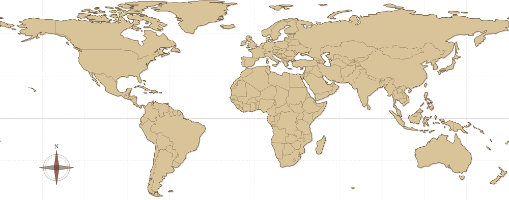

The legend himself...
The Personal Website of
Sean Cameron
❦
I teach high school courses in English and Mandarin in Taiwan, and I design curriculum grounded in second-language acquisition research.
US Passport, Taiwan-based
Chapter I
My Philosophy
❦
擇其善者而從之，
其不善者而改之。
"When I walk along with two others, they may serve me as my teachers. I will select their good qualities and follow them, their bad qualities and avoid them."
Confucian Analects 7.22
"When I walk along with two others, they may serve me as my teachers. I will select their good qualities and follow them, their bad qualities and avoid them."
Confucian Analects 7.22
As a student in Taiwan, I made a friend named Pierre, a pizza truck owner who had immigrated from France. But Pierre was no ordinary pizza chef.Every pepperoni, every olive, and every mushroom was placed with intention. You could taste the passion in every bite. Though Pierre was a foreigner, his dedication to his craft built a community, and when he announced his retirement, people came in droves for one last taste. When I asked him how he had mastered his craft, he said the community around him inspired him to do better and be better.
One of the greatest dangers we face, I believe, is complacency. It is easy to stay passive in a chaotic world, thinking we have nothing more to learn or do. A few close brushes with death at an early age taught me that our time is precious. So in every role I've had, whether translator, teacher, or student, I try to emulate Pierre: persistent in my work, and learning from the people around me all the way.
Of all the teaching styles, I align mostly with the affective-humanistic philosophy. Research has consistently shown the value of emotion and social connection in the learning process. In my classroom, that means building a community where students learn from one another across languages and cultures, and they develop a curiosity that transforms them into lifelong learners.
Chapter II
Work Experience
❦
-
Aug 2024 – Present
Bilingual Program Instructor
Washington High School 華盛頓高級中學 · Taichung, Taiwan- Design curriculum and teach high school courses in English and Mandarin: Business, International View (SDGs), Model UN, Music, and National Defense.
- Teach ESL and German to junior high and high school students.
- Coordinate online exchanges with high schools in Taiwan, Japan, Malaysia, and the USA.
- Translate and proofread International View, a weekly global news curriculum published for schools across the region.
-
Aug – Dec 2023
Mandarin Curriculum Design Intern
National Academy for Educational Research 國家教育研究院 · Taipei- Wrote and designed a digital curriculum for Mandarin learners for use by Taiwan's Ministry of Education.
- Consulted on the Academy's language corpus tools, and translated and proofread its English documentation.
-
Mar 2020 – Jun 2023
Research & Teaching Assistant
Brigham Young University · Provo, Utah- Neurolinguistics Lab: conducted EEG sessions under Dr. Jeffrey Green and trained new research assistants; TA for LING 580R: Neurolinguistics.
- Economics: collected and analyzed historical data for Dr. Joseph Price; Kaizen team leader.
- Linguistics/Arabic: wrote articles on second-language acquisition research for a general audience.
-
Feb 2021 – Jun 2022
Language Content Specialist
Embark · Provo, Utah- Managed content in the Embark app for Japanese, Korean, Mandarin, Cantonese, Vietnamese, Thai, and Persian.
- Developed Mandarin Canvas courses grounded in second-language acquisition research.
-
Jan – Apr 2020
Translation Guide Project Manager
The Church of Jesus Christ of Latter-day Saints · Provo, Utah- Wrote translation guides as part of a team and delivered on schedule to the project sponsor.
-
Jul 2017 – Jul 2019
Full-Time Representative
The Church of Jesus Christ of Latter-day Saints · Los Angeles- Taught community ESL classes, primarily serving the Chinese-speaking community of Los Angeles County.
- Supervised and trained groups of 15–18 representatives.
Notes from the Field
❦
Some of these roles come with a story: the programs I built, the students I worked with, and the materials I made along the way.
Aug 2024 – Present
Washington High School
❦
Model United Nations
[A few sentences about your work with Model UN: what you did, what the students achieved, and a moment you're proud of.]
Picture
Evening TOEIC
[A few sentences about the evening TOEIC classes: who they were for, how you taught them, and how the students did.]
Aug – Dec 2023
National Academy for Educational Research
❦
[A few sentences about the digital Mandarin curriculum you designed: who it's for and what makes it different.]
Curriculum prototypes
[One line introducing the prototypes, which were built with Gamma, an AI presentation tool.]
Chapter III
Education
❦
B.A., Linguistics & Chinese
Study in Taiwan
Academic Exchange, Chinese Language
Chinese Language & Literature
Certifications
Developing a Critical Thinking Mindset
Chapter IV
Skills
❦
Courses I've taught
Strengths
Tools
Languages
EnglishNative
Mandarin ChineseCEFR C1
GermanCEFR B2
Chapter V
Projects & Pursuits
❦
Teaching Projects
❦
International View
English–Chinese translation and proofreading of a weekly global news curriculum used by schools across the region.
Digital Mandarin curriculum
A digital Mandarin course for learners in Taiwan, written for the Ministry of Education and drawing on corpus tools and AI-assisted design.
Cross-border classroom exchanges
Live online exchanges connecting my students with high schools in Japan, Malaysia, and the USA.
Digital Projects
❦
Tibi 提筆
A handwriting app for Chinese learners. Instead of drilling stroke order on flashcards, you write characters in context, filling blanks in sentences built only from characters you already know. Strokes are graded by position and direction, with a gentle hint when you miss.
This website
A portfolio designed as an antique book, with page turns, bookmark tabs, and a hand-plotted travel map.
[Another project]
[A sentence or two about what it does and why you made it.]
Photography
❦
[A sentence about your photography: what you like to shoot, and with what camera.]
Photograph
Photograph
Photograph
Photograph
Scuba Diving
❦
73dives logged
certifications
Certifications
- PADIOpen Water DiverDec 2021
- PADIAdvanced Open Water DiverMar 2022
- SNSIRecreational NitroxJul 2025
- SNSIRescue DiverAug 2025
- SDIDPV DiverNov 2025
- SNSIDry Suit DiverMar 2026
Travels
❦

HomePlaces visited
Places I have called home
- Logan, Utah
- Los Angeles, California
- Vernawahlshausen, Germany
- Hong Kong
- Taipei, Taiwan
- Taichung, Taiwan
Places visited
- United States
- Canada
- Costa Rica
- Germany
- Austria
- Japan
- Taiwan
- Hong Kong
- Macau
- Singapore
- Malaysia
- Thailand
- Philippines
- Indonesia
- Australia
- New Zealand
Chapter VI
Correspondence
❦
I'm exploring teaching positions at international schools in Taiwan, Japan, and beyond. I'd love to hear from you.
The End
❦
Thank you for reading. This portfolio was written and bound with love (and a bit of help from Claude).
SC
❦❦❦❦
Sean
Cameron
Cameron
— ❖ —
Bilingual Educator & Researcher
SC
Click to open